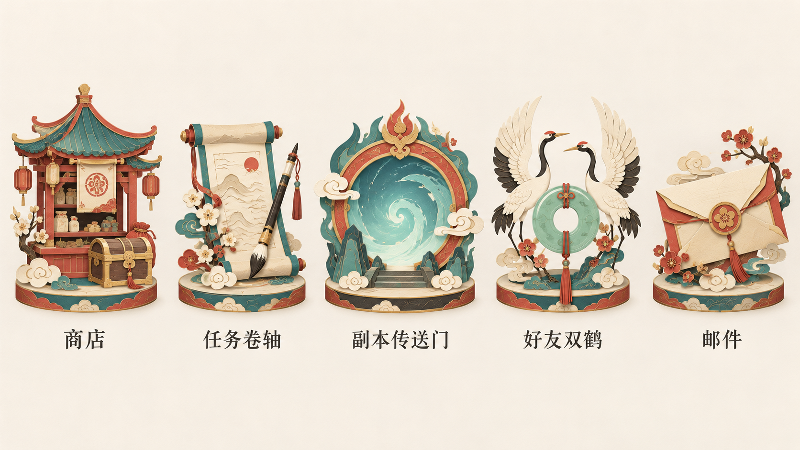
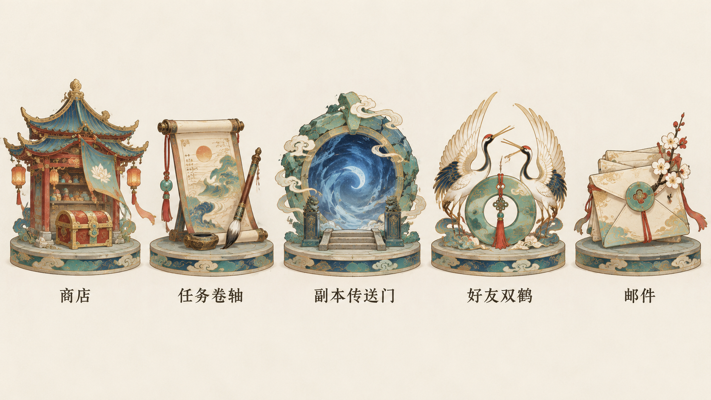
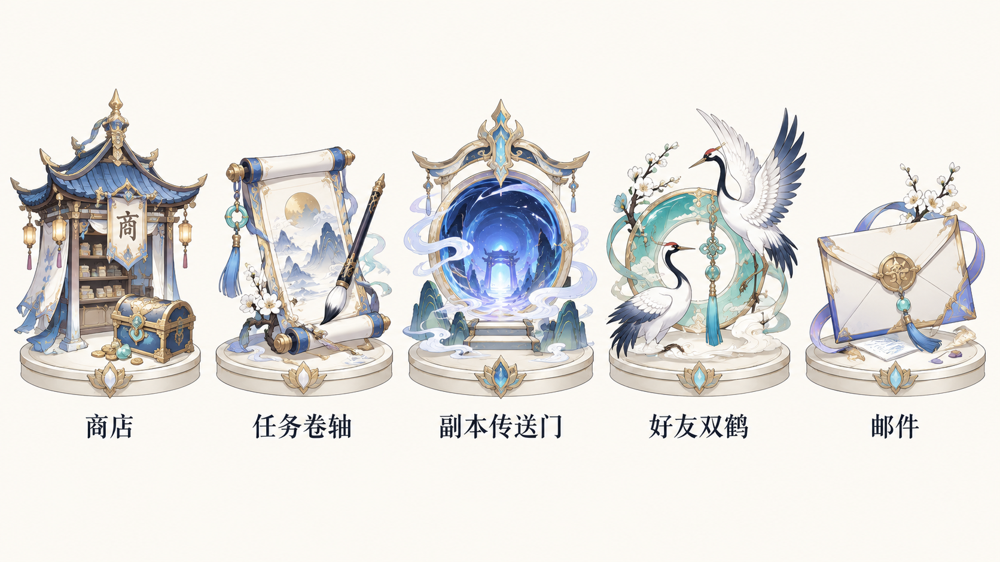

仙侠入口美术 · 不同风格对比
相同的五个功能与中性底色，分别改变笔触、材质、配色和底座造型。名称置于图下方；风格文字已独立记录，便于选定后生产。
A · 水墨淡彩
纸白烟青 · 淡墨水洗 · 素雅留白

打开1920×1080检查页 · 文字风格档案 · 生图原件
B · 国风工笔
月白玉色 · 细线层染 · 精致端雅

打开1920×1080检查页 · 文字风格档案 · 生图原件
C · 清新卡通
薄荷桃粉 · 圆润造型 · 轻松明亮

打开1920×1080检查页 · 文字风格档案 · 生图原件
D · 写意水墨
墨色笔势 · 简练写意 · 大面积留白

打开1920×1080检查页 · 文字风格档案 · 生图原件
E · Q版二维卡通
Q版比例 · 二维色块 · 活泼可爱

打开1920×1080检查页 · 文字风格档案 · 生图原件
F · 块面风格化3D
几何切面 · 哑光材质 · 现代仙侠

打开1920×1080检查页 · 文字风格档案 · 生图原件
G · 剪纸拼贴仙侠
配色为柔和朱砂红、青绿、奶油纸白与少量暖金。染色纸纤维、剪纸云纹和花瓣以多层叠纸呈现，边缘保留手作感。光照柔和，层间接触阴影提供浅体积；视角为正面略俯视。商店、卷轴、传送门、双鹤和信封均有清晰轮廓，低矮圆形底座用相同纸层和云纹，避免尖锥浮岛。实际图装饰密度仍偏高，纸层表现比纯二维剪纸更有体积，正式小尺寸素材应再简化。

设计基准1920×1080 · 生图原件1672×941 · 未分层，仅候选 · 完整风格描述与提示词 · 保存原图
H · 敦煌岩彩仙侠
配色为石青、石绿、赭石、低饱和朱砂红和克制旧金。采用矿物颜料颗粒、干燥哑光表面、细金轮廓和装饰云纹，光照平缓，正面略俯视，偏平面到浅浮雕。低矮圆盘底座延续相同岩彩纹理，造型端雅，五项功能一致。实际图细节和旧金纹饰较丰富，部分屋檐与底座有复古体积感；如希望更接近平面壁画，需要下一轮减少明暗体积和细饰。

设计基准1920×1080 · 生图原件1672×941 · 未分层，仅候选 · 完整风格描述与提示词 · 保存原图
I · 赛璐璐动漫仙侠
配色为象牙白、宝石蓝、淡紫、薄荷青和少量暖金。采用二维动漫道具线稿、渐细轮廓、两到三段明暗色块与局部高光，视角正面略俯视，光线清爽明亮。造型纤细优雅，避免Q版短胖比例；五项功能和低矮象牙圆台统一线宽与明暗。实际图仍含部分柔和渐变，商店额外出现商字，尚非完全平涂赛璐璐；正式无字素材需去掉额外文字并收紧阴影层数。

设计基准1920×1080 · 生图原件1672×941 · 未分层，仅候选 · 完整风格描述与提示词 · 保存原图